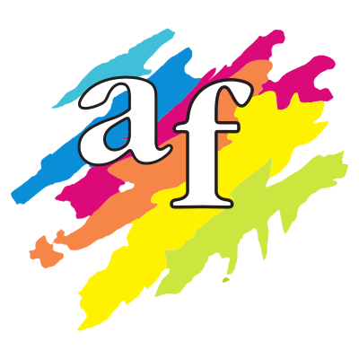

2008 - novembre 2017
Valladolid, Spagna
GRAFICO IMPAGINATORE - ALCAÑIZ FRESNO’S S.A.
Impaginatore specializzato nella creazione di gazzette ufficiali e nella loro edizione elettronica.
Tester delle risorse tecnologiche, e creatore di automatismi per inDesign attraverso JavaScript, che permettono di risparmiare molte ore di lavoro.
Coordinatore del team di lavoro e problem solving.
Addetto al montaggio dei computer, all'installazione di software e alla creazione di templates e degli stili necessari.
Ho lavorato nei Bollettini Ufficiali del Senato di Spagna, delle Corti di Castiglia e León e della Giunta di Castiglia e León tra altri.